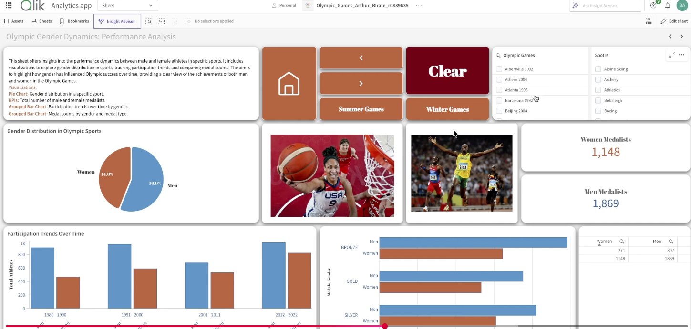
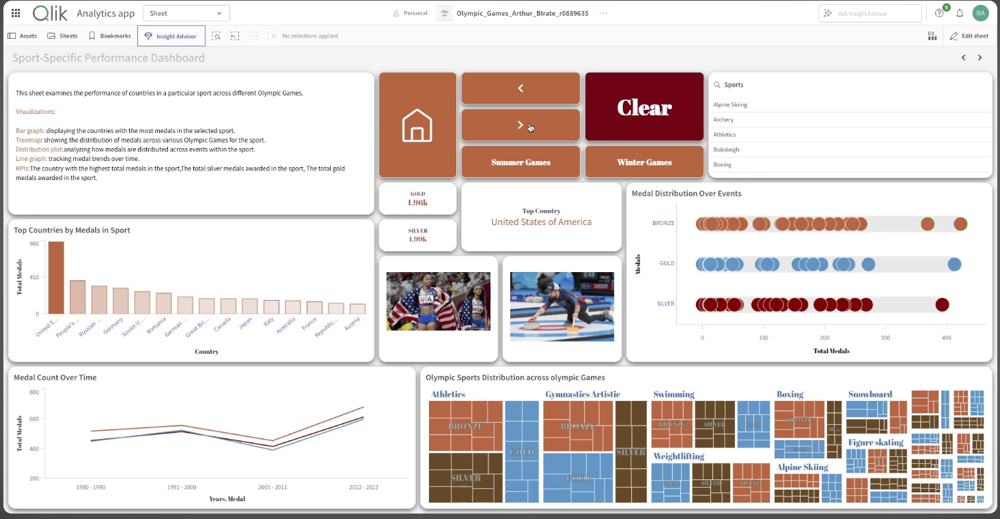

Projects / Olympics Dashboard (Qlik Sense)
Olympics Dashboard (Qlik Sense)
This project focused on building an interactive Qlik Sense dashboard analyzing Olympic Games data from 1980 to 2022, enabling medal tracking, gender analysis, sport-specific drilldowns, and athlete-level insights.
1980–2022
Coverage period
Multi-sheet
Dashboard app
Qlik
Interactive analysis
Olympics
Performance insights
Dashboard Screenshots
Representative views from the multi-sheet Qlik Sense application.


Dataset
Source preparation and modeling steps used to build a responsive analytical application.
The dataset covered athletes, medals, countries, sports, and events from 1980 to 2022. Preprocessing was completed in Qlik’s load editor to prepare the data for structured interactive analysis.
- Standardized inconsistent country codes such as USSR to Russia
- Cleaned duplicate or incomplete athlete records
- Reshaped medal data for time-series analysis
- Built a star-schema-like model for strong drill-down performance
These preparation steps ensured a smoother user experience and better dashboard responsiveness even with large historical datasets.
Results
Key analytical outputs delivered by the final Qlik Sense application.
The final application combined medal tracking, gender analysis, sport-specific insights, and athlete-level details into a single interactive environment.
- Dynamic medal tracking with filters for year, country, gender, and sport
- Gender analysis highlighting increased female participation since the 1980s
- Sport-specific trends showing shifts in dominance across athletics, swimming, and gymnastics
- Athlete profiles with medal totals and career histories
- Age analysis showing different performance patterns across event types
Key Learnings
Technical and analytical capabilities strengthened through this project.
- Mastered Qlik load scripting for data cleaning and modeling
- Applied set analysis for advanced filtering and dynamic measures
- Optimized performance with efficient joins and pre-aggregation
- Designed multi-sheet dashboards with KPI summaries and drilldowns
- Improved BI storytelling for both casual users and analysts
- Developed a stronger understanding of Olympic performance trends